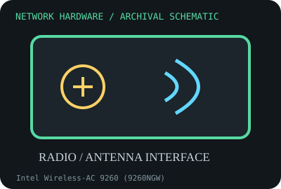

[ MODEL-SPECIFIC NETWORK HARDWARE RECORD ]
Intel Wireless-AC 9260 (9260NGW)
2x2 802.11ac Wave 2 M.2 radio supporting 160 MHz channels and Bluetooth 5. This record identifies the stated model/revision; visually similar products may use different silicon or firmware.

IDENTIFICATION: Verify the full label, board revision, vendor/device IDs and regulatory markings before selecting firmware or drivers. Nominal PHY/link rates below are not measured application throughput.
Specifications and compatibility
| Subcategory | Wireless adapters |
|---|---|
| Exact model | Intel Wireless-AC 9260 (9260NGW) |
| Interface and connector | M.2 2230 Key E module with PCIe Wi-Fi and USB Bluetooth interfaces; two antenna connectors. |
| Controller / PHY / radio | Dual-band 2x2 802.11ac Wave 2; up to 160 MHz channel width and Bluetooth 5.0, subject to OS and host support. |
| Nominal throughput (not a test) | Up to 1.73 Gb/s advertised Wi-Fi link rate at 2x2/160 MHz with a compatible AP; rate is a PHY link maximum, not measured payload throughput. |
| Measured throughput | Not measured in this archive. Reported wireless results require AP capability, clean 160 MHz spectrum, client placement and reproducible test details. |
| Driver / OS / firmware | Windows 10 support depends on Intel package/OEM lifecycle; Linux iwlwifi with the required firmware is common. Driver, Bluetooth USB path and regulatory database versions matter. |
| Compatibility | Needs an M.2 Key E host wired for PCIe plus USB, two antenna paths and a 160 MHz-capable AP for the top advertised rate. Host firmware/BIOS may limit module installation. |
| Variant warning | 9260NGW differs from CNVio-only modules and from 9560 CNVi. A nominally matching M.2 socket does not guarantee signal wiring, BIOS acceptance or Bluetooth connectivity. |
Variant and operating notes
9260NGW differs from CNVio-only modules and from 9560 CNVi. A nominally matching M.2 socket does not guarantee signal wiring, BIOS acceptance or Bluetooth connectivity.
Windows 10 support depends on Intel package/OEM lifecycle; Linux iwlwifi with the required firmware is common. Driver, Bluetooth USB path and regulatory database versions matter.
Throughput policy: vendor/standard rates are labeled nominal. This archive includes no measured benchmark for this specimen; do not interpret a link rate or aggregate port capacity as sustained payload performance.
Archival, ESD and preservation notes
Keep the original module label and antenna port mapping in the record. Use ESD grounding, never pull antenna leads by wire, and store the module in a sealed antistatic pouch.
Preserve the exact model/revision, serial/date code, firmware and driver versions, accessories, condition, source provenance, and source-document revision. Never retain access credentials or undocumented secrets in the public catalog.
Manufacturer and standards sources
- Intel Wireless-AC 9260 product specificationsManufacturer or standards reference; match the complete model/revision before applying specifications.
- Intel 9260 support and downloadsManufacturer or standards reference; match the complete model/revision before applying specifications.
- Wi-Fi Alliance technology overviewManufacturer or standards reference; match the complete model/revision before applying specifications.
Source coverage can be family-level; manufacturer documentation for the exact part number and hardware revision takes precedence. Standards describe protocol behavior, not a promise of real-world performance.